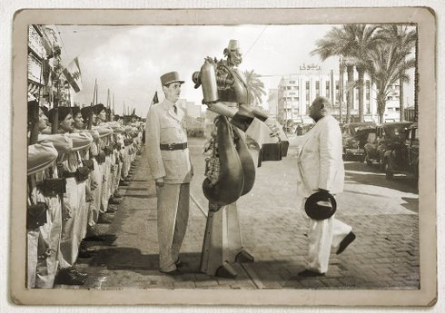

Manivelle: Last Days of the Man of Tomorrow

Fadi [the fdz] Baki
LB/DE 2017 Award Robert Bosch 30 min – HD – Arabic B: Fadi Baki – K: Tobias von dem Borne – T: Lama Sawaya – M: Nadim Mechlawi – S: Zeina Abul Hosn – P+V: Niklas Hlawatsch
|
Tuesday 16 oct 8.30 pm werkstattkino
A young filmmaker investigates the legend of ‘Manivelle’, an automaton gifted to Lebanon in 1945 that still haunts an abandoned mansion in Beirut.
Fadi [the fdz] Baki born in Beirut in 1977. Co-founder and editor of Samandal Comics magazine, he works nowadays in animation, comics and filmmaking.
|
| Films Balut 2013 – Shatila 2016 – Manivelle 2018
|